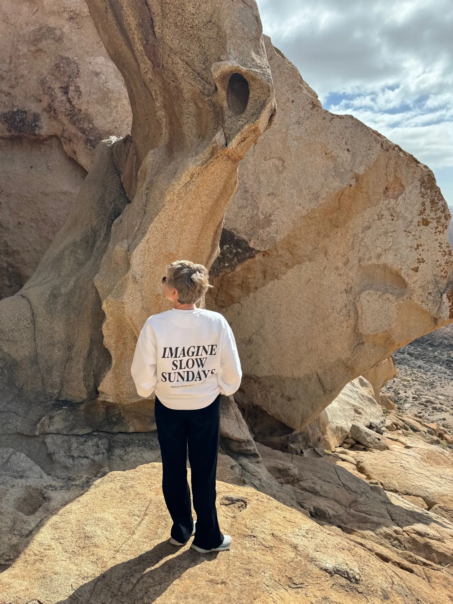
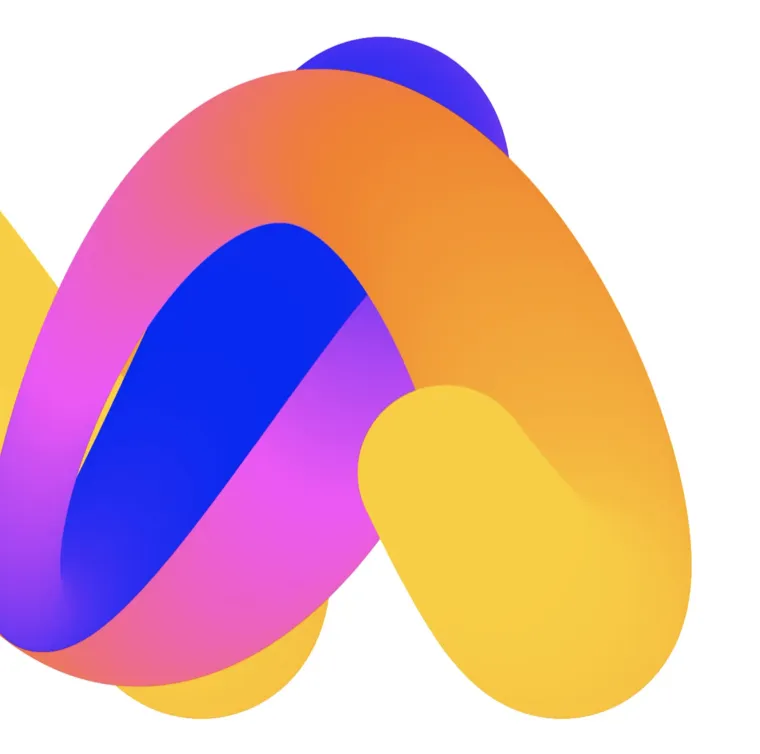
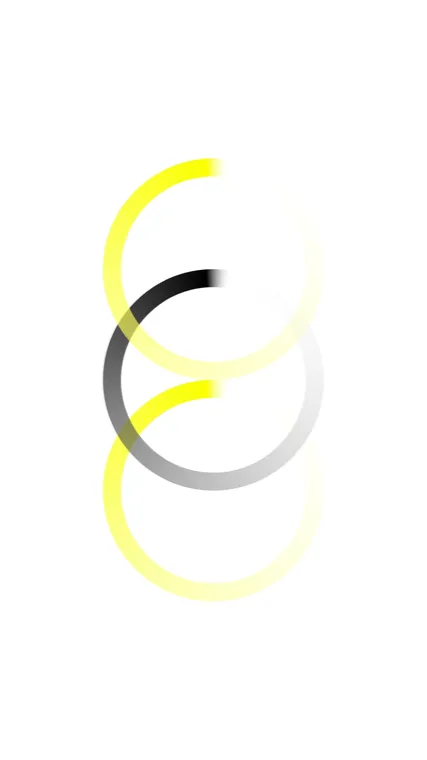

I connect creative direction, digital brand design and AI-native workflows to shape future-facing digital experiences.
With a background in digital products, brand experiences and scalable design systems, I connect visual strategy with user-centered product thinking.
My focus is on AI-native creative workflows, using generative tools, rapid prototyping and structured systems to expand what can be imagined, tested and built.
I'm a currently completing the Master in Generative Artificial Intelligence for Creatives at LABASAD, Barcelona School of Arts and Design, where I explore how AI can support concept development, visual storytelling and future-facing digital products.
Creative Direction
Digital Brand & Product Design
AI-Native Workflows
Le Caid Design Collective
Cases, clients, references.
My design portfolio across brand, product and digital design lives on lecaid.com.
Explore lecaid.com
Brand identities and visual systems shaped through creative direction and AI exploration.
Brand & Visual Systems
Explore

Let's shape what's next.
Open for freelance projects, collaborations and AI-native creative systems.